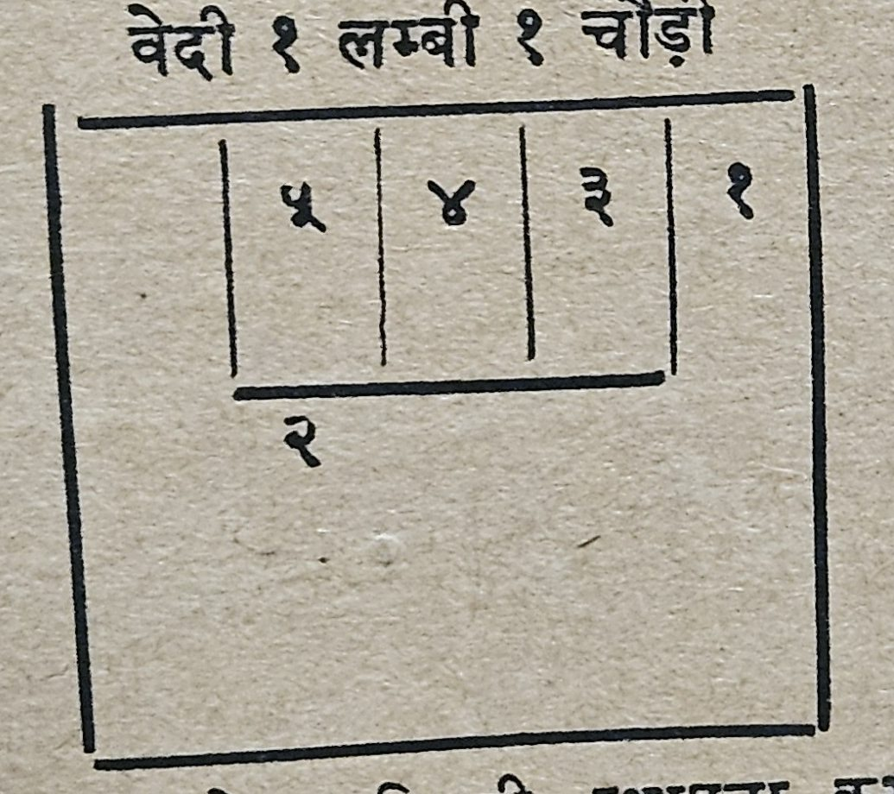

वैश्वदेव — पञ्चभूसंस्कार (चित्र सहित), अन्नाहुतियाँ · पृ० ३१
समिधा हवन, अञ्जलि सेचन, पर्युक्षण, प्रणीता पूरण तक की क्रियाएँ नित्य होम के समान पूरा करे। इति वैश्वदेवः।
यदि यजान निरग्नि कहो तो अग्निवेदी को तीन कुशों से ३ बार झाड़ दे तीन वार गोवर से लीप दे वेदी के मध्य भाग से ऊपर निम्नाङ्कित चित्र के अनुसार कुश की जड़ या स्रुव मूल से रेखाएँ बनावें क्रमशः १-२-३-४-५, १- पच्छिम से पूर्व १२।२- दखिन से उत्तर २१ अंगुल। ३ री ४ थी दश २ अं० ५ वीं ११। पाँच पाँच अंगुल की दूरी पर चारों ओर रेखायें रहेंगी, रेखा की मिट्टी को अनामिका अँगूठे से उठा कर १ हाथ की दूरी पर ईशान कोण में फेंके, अधोमुख हाथ से जल सींचकर अभ्युक्षण करे इसी का नाम पंच भू संस्कार है।

बाद उपर्युक्त मन्त्र से अग्नि की स्थापना करके प्रज्वलित करे प्रात होम में लिखे भूजप न्यञ्चकरण कर परिसमूहन के मन्त्रों का पाठ उसी रीति से करे। अञ्जलि सेचन पर्युक्षण समिदाधान करके आगे के मन्त्रों से अन्न की आहुतियाँ दें, ये १६ सोलह हैं इनमें अन्त की आठ ८ आहुतियाँ बिना स्वाहा शब्द के ही दी जायँगी
ॐ भूः स्वाहा इदमग्नये नमम १ ॐ भुवः स्वाहा इदंवायवे नमम २ ॐ स्वः स्वाहा सूर्यायेदन्ननमम ३ ॐ अग्नयेस्वाहा इदमग्नये नमम ४ ॐ धन्वन्तर ये स्वाहा धन्वन्तरय इदन्नमम ५ ॐ विश्वेभ्योदेवेभ्यःस्वाहा विश्वेभ्योदेवेभ्यइदन्नमम ६ ॐ प्रजापतये
Editorial notes
- “यजान” is printed so (for यजमान); “निरग्नि” is printed with an anusvāra-like mark. The page is torn near the top, through “पर्युक्षण” and “करे”.
- The figure is cropped from the photograph. It shows the vedī with lines 1 to 5 drawn as the text describes.